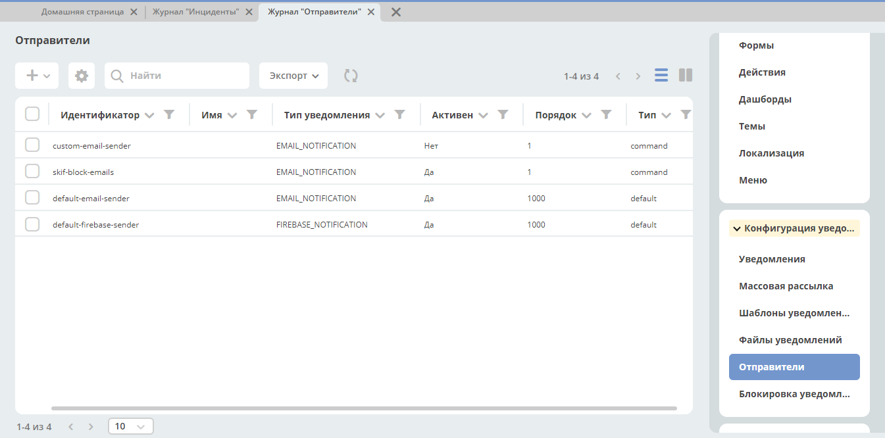

Отправители
Примечание
Добавлено в версии 2.9.0 микросервиса ecos-notifications
Содержание
1. Общие сведения
Основная цель механизма - это роутинг, обработка одного уведомления несколькими сендерами не поддерживается. Механизм разрабатывался для поддержки возможности блокировки отправки уведомлений
Журнал «Отправители» доступен в разделе администратора меню «Конфигурация уведомлений»
{kind=link}
Для отправки уведомления перебираются активные отправители с соответствующим типом нотификации в порядке возрастания порядка.
В отправителе можно определить список шаблонов, для которых он будет применяться. Если список не задан, то отправитель доступен для отправки уведомления по любому шаблону.
Также в конфигурации можно указать дополнительные условия для применения сендера. Условия описываются в формате предикатов, например:
{
"t": "eq",
"a": "process-definition",
"v": "flowable$confirm"
}
Значения атрибутов при проверке применения сендера вычисляются на основе атрибутов модели шаблона нотификации.
Реализовано два типа отправителей default и command.
default не имеет параметров для конфигурации. В микросервисе нотификации сконфигурированы два default отправителя default-email-sender и default-firebase-sender с порядком равным 1000. Их можно увидеть в журнале “Отправители“ (раздел администратора, меню “Конфигурация уведомлений”) У отправителя с типом command в конфигурации определены два параметра:
{
"targetApp": String // приложение, в котором нужно исполнить команду
"commandType": String // тип команды
}
Для отправки уведомления через command-отправителя необходимо реализовать:
Класс с аннотацией
@CommandType(“тип_ команды_из_конфигурации“). Структура класса должна повторять структуру уведомления, отправляемого микросервисом нотификации (ru.citeck.ecos.notifications.domain.sender.command.CmdFitNotification)Обработчик команды реализующий интерфейс ru.citeck.ecos.commands.CommandExecutor<класс_из_п.1>. В результате выполнения обработчик должен возвращать значение из перечисления ru.citeck.ecos.notifications.lib.NotificationSenderSendStatus.
Создать отправителя в журнале “Отправители“
{kind=link}
2. Статусы обработки уведомления
После получения уведомления на отправку сендер должен вернуть статус обработки уведомления (ru.citeck.ecos.notifications.lib.NotificationSenderSendStatus):
SENT - Уведомление отправлено. Дальнейшая обработка не требуется
BLOCKED - Отправка уведомления заблокирована. Дальнейшая обработка не требуется
SKIPPED - Уведомление не обработано текущим Sender’ом. Нужно использовать следующий.
3. Пример использования command отправителя
Для блокировки отправки сообщений были созданы журнал с условиями блокировок и command отправитель. Также создан обработчик команды, которая указана в конфигурации отправителя. Этот обработчик проверяет совпадают ли параметры уведомления с условиями в журнале блокировок, и если совпадают, то возвращает статус BLOCKED. Таким образом, уведомление не отправляется, а помечается как заблокированное